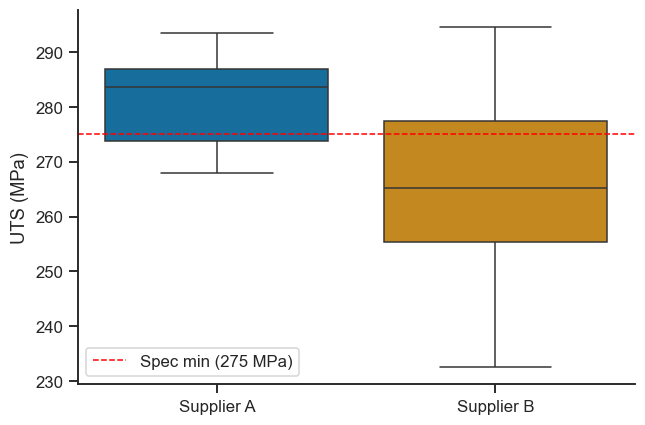
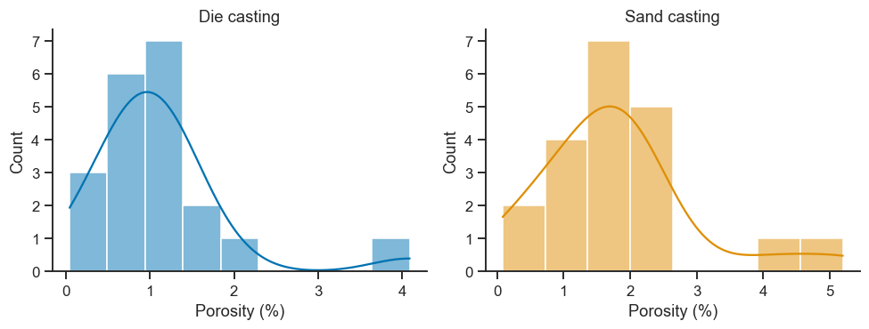
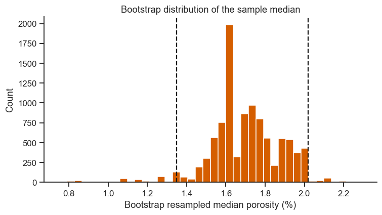

11. Live Tutorial 1: A Day in the Quality Lab — t-Tests in Practice#
Notebook 8 (Hypothesis Testing) introduced each t-test in isolation. This session puts them to work the way you actually will: as a sequence of real decisions made over one working day by a materials-testing quality engineer at an aluminium-casting supplier. Every dataset below is synthetic but built to behave like real measurement data (realistic means, realistic noise, occasional awkward non-normality) — the statistics and the decisions they lead to are the point, not the specific numbers.
Each section pairs a short concept recap with a worked example and a checkpoint exercise; “Going Further” sections (11.7–11.8) and the exercise list at the end are substantial self-study material, beyond the core session.
Session plan
60-second recap: the hypothesis-testing framework
Incoming inspection: does this batch meet spec? (one-sample t)
Two suppliers, one decision: which is better? (two-sample t, Welch)
Effect size and confidence intervals: what the p-value doesn’t tell you
Did the process change help? (paired t)
Porosity data won’t cooperate (Mann–Whitney U)
Going further: bootstrap confidence intervals
Going further: planning tomorrow’s sample size (power analysis)
11.1 The Framework, in 60 Seconds#
Every test below follows the same five steps — internalise this checklist once and every test in this notebook (and Notebook 8) is just “which formula goes in step 3”:
State H0 and H1 in terms of the real quantity you care about (a population mean, a difference of means), not the sample you happened to collect.
Check assumptions relevant to the test (normality, equal variances, independence) — this determines which test you’re even allowed to use.
Compute the test statistic and p-value — how surprising is your sample, if H0 were actually true?
Compare to α (your pre-agreed false-positive tolerance, almost always 0.05 in this course) and decide.
Report an effect size and a confidence interval, not just “p < 0.05” — Section 11.4 explains why step 5 is not optional in real reporting.
import numpy as np
import pandas as pd
import matplotlib.pyplot as plt
import seaborn as sns
from scipy import stats
sns.set_theme(style='ticks', palette='colorblind')
plt.rcParams.update({'figure.dpi': 110, 'font.size': 11})
rng = np.random.default_rng(2024)
11.2 Incoming Inspection: One-Sample t-Test#
A truck of A356-T6 aluminium castings just arrived from Supplier A. Contract spec requires a mean ultimate tensile strength (UTS) of at least 275 MPa. You pull 18 castings for destructive testing.
\(H_0: \mu \geq 275\) MPa (the batch meets spec)
\(H_1: \mu < 275\) MPa (the batch is below spec)
This is a one-sided test — you only care about failure in one direction (nobody rejects a batch for being too strong).
# ── Supplier A incoming batch ─────────────────────────────────────────────────
supplier_A = rng.normal(loc=279, scale=8, size=18).round(1) # MPa
spec_min = 275
print('Supplier A UTS (MPa):', supplier_A)
print(f'Sample mean: {supplier_A.mean():.2f} MPa Sample std: {supplier_A.std(ddof=1):.2f} MPa')
# Assumption check: is 18 samples roughly normal? Shapiro-Wilk + Q-Q
stat, p_shapiro = stats.shapiro(supplier_A)
print(f'\nShapiro-Wilk normality check: W={stat:.3f}, p={p_shapiro:.3f} '
f'({"consistent with normal" if p_shapiro > 0.05 else "departs from normal"})')
Supplier A UTS (MPa): [287.2 292.1 288.2 271.2 267.9 279.5 285.9 283.1 293.5 285. 284.1 273.1
270.1 290.9 279.4 285.5 268. 275.5]
Sample mean: 281.12 MPa Sample std: 8.38 MPa
Shapiro-Wilk normality check: W=0.933, p=0.218 (consistent with normal)
# ── One-sided one-sample t-test ───────────────────────────────────────────────
t_stat, p_two_sided = stats.ttest_1samp(supplier_A, popmean=spec_min)
# ttest_1samp always returns the two-sided p-value; halve it for one-sided
# H1: mu < spec_min (and only trust the halved value if t_stat points that way,
# i.e. the sample mean fell below spec_min, making t_stat negative)
p_one_sided = p_two_sided / 2 if t_stat < 0 else 1 - p_two_sided / 2
print(f't-statistic: {t_stat:.3f}')
print(f'One-sided p-value (H1: mu < {spec_min}): {p_one_sided:.4f}')
alpha = 0.05
decision = 'ACCEPT batch' if p_one_sided > alpha else 'REJECT batch'
print(f'\nDecision at alpha={alpha}: {decision} '
f'(sample mean {supplier_A.mean():.1f} MPa vs spec {spec_min} MPa)')
t-statistic: 3.098
One-sided p-value (H1: mu < 275): 0.9967
Decision at alpha=0.05: ACCEPT batch (sample mean 281.1 MPa vs spec 275 MPa)
Checkpoint: the p-value is large — we have no evidence the batch is below spec. Note carefully what that does and does not mean: it does not prove \(\mu \geq 275\); it means the data are consistent with that claim. Failing to reject H0 is never proof of H0 — a lesson worth remembering every time you write up a QC report.
11.3 Two Suppliers, One Decision: Two-Sample t-Test#
Procurement wants to know if switching to Supplier B (cheaper, new contract) risks quality. You already have Supplier A’s 18 measurements from this morning; now test 15 castings from Supplier B.
Before comparing means, check the assumption every two-sample t-test depends on: do the two groups have equal variance?
# ── Supplier B batch — similar mean, but a much less consistent process ──────
supplier_B = rng.normal(loc=271, scale=26, size=15).round(1) # MPa
print(f'Supplier A: n={len(supplier_A)}, mean={supplier_A.mean():.1f}, std={supplier_A.std(ddof=1):.1f}')
print(f'Supplier B: n={len(supplier_B)}, mean={supplier_B.mean():.1f}, std={supplier_B.std(ddof=1):.1f}')
fig, ax = plt.subplots(figsize=(6, 4))
sns.boxplot(data=[supplier_A, supplier_B], ax=ax, palette='colorblind')
ax.set_xticks([0, 1]); ax.set_xticklabels(['Supplier A', 'Supplier B'])
ax.set_ylabel('UTS (MPa)')
ax.axhline(spec_min, color='red', ls='--', lw=1, label=f'Spec min ({spec_min} MPa)')
ax.legend()
sns.despine(ax=ax)
plt.tight_layout()
plt.show()
Supplier A: n=18, mean=281.1, std=8.4
Supplier B: n=15, mean=265.5, std=17.2

# ── Levene's test: are the variances equal? ───────────────────────────────────
levene_stat, levene_p = stats.levene(supplier_A, supplier_B)
print(f"Levene's test: F={levene_stat:.3f}, p={levene_p:.4f}")
equal_var = levene_p > 0.05
print(f'Equal variance assumption: {"holds" if equal_var else "VIOLATED"} at alpha=0.05')
print(f'-> use {"Student" if equal_var else "Welch"} t-test')
Levene's test: F=6.536, p=0.0157
Equal variance assumption: VIOLATED at alpha=0.05
-> use Welch t-test
Levene’s test flags unequal variance here — Supplier B’s process is
noticeably less consistent than Supplier A’s (compare the two standard
deviations printed above), not just a coincidence of sampling. Using the
standard (pooled-variance) t-test anyway would
understate the true uncertainty in the comparison. Welch’s t-test
fixes this by not assuming equal variances — it’s implemented in
scipy.stats.ttest_ind via equal_var=False, and unlike the standard
test, its degrees of freedom are not simply \(n_1+n_2-2\) (Welch–Satterthwaite
approximation instead) — one more reason to let the function compute it
rather than doing it by hand.
t_stat, p_val = stats.ttest_ind(supplier_A, supplier_B, equal_var=equal_var)
test_name = 'Student' if equal_var else 'Welch'
print(f'{test_name}\'s two-sample t-test:')
print(f' t-statistic: {t_stat:.3f}')
print(f' p-value (two-sided): {p_val:.4f}')
print(f' Decision at alpha=0.05: '
f'{"reject H0 -- means differ" if p_val < 0.05 else "fail to reject H0 -- no evidence of a difference"}')
Welch's two-sample t-test:
t-statistic: 3.218
p-value (two-sided): 0.0044
Decision at alpha=0.05: reject H0 -- means differ
Checkpoint / Exercise A: Re-run Section 11.3 forcing equal_var=True
regardless of what Levene’s test said. Does the conclusion change? This is
exactly the mistake Levene’s test exists to catch — note it down as a
reason to always check the variance assumption before choosing which
flavour of t-test to run.
11.4 Effect Size and Confidence Intervals: What the p-Value Doesn’t Tell You#
A p-value answers “is there evidence of a difference?” — it says nothing about how big that difference is, and a large sample can make a practically meaningless difference statistically “significant.” Two numbers fix this, and a real QC report should always include them alongside the p-value:
Cohen’s d — the difference in means, measured in units of pooled standard deviation: \(d = (\bar{x}_1-\bar{x}_2)/s_{\text{pooled}}\). Rules of thumb: \(|d|\approx0.2\) small, \(0.5\) medium, \(0.8\) large.
Confidence interval on the difference — a range of plausible values for the true mean difference, which lets an engineer judge practical significance (“is a 5 MPa gap something we actually care about?”) in a way a single p-value cannot.
def cohens_d(x, y):
nx, ny = len(x), len(y)
pooled_std = np.sqrt(((nx - 1) * x.var(ddof=1) + (ny - 1) * y.var(ddof=1)) / (nx + ny - 2))
return (x.mean() - y.mean()) / pooled_std
d = cohens_d(supplier_A, supplier_B)
print(f"Cohen's d = {d:.2f}")
# 95% CI on the difference of means (Welch-adjusted, matching the test above)
diff = supplier_A.mean() - supplier_B.mean()
se_diff = np.sqrt(supplier_A.var(ddof=1)/len(supplier_A) + supplier_B.var(ddof=1)/len(supplier_B))
df_welch = (supplier_A.var(ddof=1)/len(supplier_A) + supplier_B.var(ddof=1)/len(supplier_B))**2 / (
(supplier_A.var(ddof=1)/len(supplier_A))**2 / (len(supplier_A)-1) +
(supplier_B.var(ddof=1)/len(supplier_B))**2 / (len(supplier_B)-1)
)
t_crit = stats.t.ppf(0.975, df_welch)
ci_low, ci_high = diff - t_crit*se_diff, diff + t_crit*se_diff
print(f'Mean difference (A - B): {diff:.1f} MPa')
print(f'95% CI on the difference: [{ci_low:.1f}, {ci_high:.1f}] MPa')
print(f'\nReport this as: "A exceeded B by {diff:.1f} MPa (95% CI [{ci_low:.1f}, {ci_high:.1f}]), '
f'a {"large" if abs(d)>=0.8 else "medium" if abs(d)>=0.5 else "small"} effect (d={d:.2f}), '
f'{"significant" if p_val<0.05 else "not significant"} at alpha=0.05."')
Cohen's d = 1.19
Mean difference (A - B): 15.7 MPa
95% CI on the difference: [5.5, 25.8] MPa
Report this as: "A exceeded B by 15.7 MPa (95% CI [5.5, 25.8]), a large effect (d=1.19), significant at alpha=0.05."
11.5 Did the Process Change Help? Paired t-Test#
The plant floor supervisor extended the T6 artificial-ageing step by 30 minutes, hoping to raise strength. To isolate the effect of just the process change (and not part-to-part variation in raw material), the same 15 casting moulds are tested before and after — a paired design. Pairing pays off when the two measurements on a unit are correlated — here, each mould has its own baseline quality level that carries over from “before” to “after,” so subtracting removes that shared baseline and isolates the treatment effect. (If the pairing variable were unrelated to the outcome, pairing would only cost degrees of freedom without any variance reduction to show for it — see the theory page’s t-test section for that caveat.) We’ll prove the power gain for this correlated case, not just assert it.
# ── Paired before/after measurements on the same 15 moulds ───────────────────
n_pairs = 15
mould_baseline_effect = rng.normal(0, 6, n_pairs) # each mould's own "quality level"
before = 274 + mould_baseline_effect + rng.normal(0, 3, n_pairs)
after = 274 + mould_baseline_effect + 6 + rng.normal(0, 3, n_pairs) # true +6 MPa improvement
df_paired = pd.DataFrame({'mould_id': [f'M{i+1:02d}' for i in range(n_pairs)],
'before': before.round(1), 'after': after.round(1)})
df_paired['improvement'] = (df_paired['after'] - df_paired['before']).round(1)
print(df_paired)
mould_id before after improvement
0 M01 280.6 287.9 7.3
1 M02 271.2 274.7 3.5
2 M03 283.5 290.6 7.1
3 M04 270.8 275.2 4.4
4 M05 268.3 276.9 8.6
5 M06 285.3 288.5 3.2
6 M07 275.2 277.8 2.6
7 M08 273.8 275.2 1.4
8 M09 263.1 270.3 7.2
9 M10 261.2 273.3 12.1
10 M11 279.6 284.1 4.5
11 M12 266.4 274.6 8.2
12 M13 276.8 286.7 9.9
13 M14 282.8 294.3 11.5
14 M15 271.4 278.6 7.2
t_paired, p_paired = stats.ttest_rel(df_paired['after'], df_paired['before'])
print(f'Paired t-test: t={t_paired:.3f}, p={p_paired:.5f}')
# Compare to (incorrectly) treating this as two independent samples
t_unpaired, p_unpaired = stats.ttest_ind(df_paired['after'], df_paired['before'])
print(f'Unpaired t-test: t={t_unpaired:.3f}, p={p_unpaired:.5f} (same data, wrong analysis)')
print(f"\nMean improvement: {df_paired['improvement'].mean():.2f} MPa")
print('The paired test is more powerful here because it subtracts out each')
print("mould's own baseline quality level before testing -- exactly the")
print('between-mould variance that inflates the unpaired test\'s uncertainty.')
Paired t-test: t=7.875, p=0.00000
Unpaired t-test: t=2.426, p=0.02194 (same data, wrong analysis)
Mean improvement: 6.58 MPa
The paired test is more powerful here because it subtracts out each
mould's own baseline quality level before testing -- exactly the
between-mould variance that inflates the unpaired test's uncertainty.
Checkpoint / Exercise B: Increase mould_baseline_effect’s standard
deviation in Section 11.5 from 6 to 20 (bigger part-to-part variability)
and re-run. What happens to the gap between the paired and unpaired
p-values as between-unit variability grows? This is exactly why paired /
blocked designs matter more the noisier your material system is — a
concept Part III, Notebook 9 §9.4 (two-way ANOVA) and this course’s
Notebook 7 (Live Tutorial 2, Section 7.3) revisit as blocking.
11.6 Porosity Data Won’t Cooperate: Mann–Whitney U#
The day’s last comparison: casting porosity (% void volume, from CT scan) for two processes — gravity die casting vs. sand casting. Porosity is bounded at zero and often right-skewed (most castings are good, a long tail of worse ones) — exactly the kind of variable that should make you suspicious of a t-test before you even plot it.
# ── Porosity: right-skewed, simulated via a gamma distribution ────────────────
porosity_die = rng.gamma(shape=2.0, scale=0.6, size=20) # % porosity
porosity_sand = rng.gamma(shape=2.0, scale=0.9, size=20) # sand casting: more porous
fig, axes = plt.subplots(1, 2, figsize=(9, 3.5))
sns.histplot(porosity_die, kde=True, ax=axes[0], color=sns.color_palette('colorblind')[0])
axes[0].set_title('Die casting'); axes[0].set_xlabel('Porosity (%)')
sns.histplot(porosity_sand, kde=True, ax=axes[1], color=sns.color_palette('colorblind')[1])
axes[1].set_title('Sand casting'); axes[1].set_xlabel('Porosity (%)')
sns.despine()
plt.tight_layout()
plt.show()
for name, data in [('Die', porosity_die), ('Sand', porosity_sand)]:
_, p_sw = stats.shapiro(data)
print(f'{name} casting Shapiro-Wilk p = {p_sw:.4f} '
f'({"normal-ish" if p_sw > 0.05 else "NOT normal -- avoid the t-test"})')

Die casting Shapiro-Wilk p = 0.0002 (NOT normal -- avoid the t-test)
Sand casting Shapiro-Wilk p = 0.0098 (NOT normal -- avoid the t-test)
# ── Mann-Whitney U: compares *ranks*, not means -- valid without normality ────
u_stat, p_mw = stats.mannwhitneyu(porosity_die, porosity_sand, alternative='two-sided')
print(f'Mann-Whitney U = {u_stat:.1f}, p = {p_mw:.4f}')
print(f'Median porosity: die={np.median(porosity_die):.2f}%, sand={np.median(porosity_sand):.2f}%')
print(f'\nDecision at alpha=0.05: '
f'{"processes differ significantly" if p_mw < 0.05 else "no significant difference detected"}')
Mann-Whitney U = 102.0, p = 0.0084
Median porosity: die=1.00%, sand=1.68%
Decision at alpha=0.05: processes differ significantly
Take-home message
Median porosity is 1.00% for die casting vs. 1.68% for sand casting — sand casting produces roughly 68% more void volume in a typical part, and p=0.008 says that gap is unlikely to be sampling noise.
Because Mann-Whitney compares ranks rather than means, “sand casting tends to rank higher” is the precise claim being tested — not a difference in average porosity as such, though here both point the same direction.
11.7 Going Further: Bootstrap Confidence Intervals#
Every CI so far came from a formula that assumes a particular distribution shape. The bootstrap sidesteps that assumption entirely: resample your own data (with replacement) thousands of times, recompute the statistic each time, and use the spread of those resampled statistics directly as your confidence interval. It works for almost any statistic — including the median, which has no simple textbook formula for a CI at all — which is exactly why we apply it to the skewed porosity data below rather than the well-behaved UTS data from earlier.
def bootstrap_ci(data, stat_func=np.median, n_boot=10_000, ci=0.95, seed=0):
"""Percentile-method bootstrap CI for any statistic (mean, median, ...)."""
boot_rng = np.random.default_rng(seed)
n = len(data)
boot_stats = np.empty(n_boot)
for i in range(n_boot):
resample = boot_rng.choice(data, size=n, replace=True)
boot_stats[i] = stat_func(resample)
lo, hi = np.percentile(boot_stats, [(1-ci)/2*100, (1+ci)/2*100])
return lo, hi, boot_stats
lo, hi, boot_medians = bootstrap_ci(porosity_sand, stat_func=np.median)
print(f'Sand casting median porosity: {np.median(porosity_sand):.2f}%')
print(f'95% bootstrap CI on the median: [{lo:.2f}, {hi:.2f}]% (from {len(boot_medians):,} resamples)')
fig, ax = plt.subplots(figsize=(7, 4))
ax.hist(boot_medians, bins=40, color=sns.color_palette('colorblind')[3], edgecolor='white')
ax.axvline(lo, color='k', ls='--'); ax.axvline(hi, color='k', ls='--')
ax.set_xlabel('Bootstrap resampled median porosity (%)')
ax.set_ylabel('Count')
ax.set_title('Bootstrap distribution of the sample median')
sns.despine(ax=ax)
plt.tight_layout()
plt.show()
Sand casting median porosity: 1.68%
95% bootstrap CI on the median: [1.35, 2.02]% (from 10,000 resamples)

Take-home message
The bootstrap CI [1.35, 2.02]% is centred near the reported median (1.68%), as expected — the width of the histogram above, not any textbook formula, is what generated this interval.
Read it as: a follow-up batch’s median porosity landing anywhere in [1.35, 2.02]% would not be surprising, given the scatter already present in this one 20-part sample.
11.8 Going Further: Planning Tomorrow’s Sample Size#
Procurement wants stronger evidence on the Supplier A vs. B question before signing a new contract. Given today’s estimated effect size, how many castings per supplier would tomorrow’s test need to reliably detect it? This is exactly Notebook 8 §8.5’s power-analysis idea, applied here to plan a real follow-up experiment from today’s pilot data — the realistic way sample-size planning actually happens.
from statsmodels.stats.power import TTestIndPower
analysis = TTestIndPower()
d_observed = abs(cohens_d(supplier_A, supplier_B))
for power_target in (0.80, 0.90, 0.95):
n_needed = analysis.solve_power(effect_size=d_observed, alpha=0.05,
power=power_target, ratio=1.0)
print(f'Power={power_target:.0%}: need n={np.ceil(n_needed):.0f} per supplier '
f'(observed d={d_observed:.2f})')
print(f'\nToday\'s pilot used n={len(supplier_A)} and n={len(supplier_B)} --',
'compare that to the numbers above and judge whether today\'s test was adequately powered.')
Power=80%: need n=13 per supplier (observed d=1.19)
Power=90%: need n=16 per supplier (observed d=1.19)
Power=95%: need n=20 per supplier (observed d=1.19)
Today's pilot used n=18 and n=15 -- compare that to the numbers above and judge whether today's test was adequately powered.
Take-home message
Today’s pilot used n=18 (Supplier A) and n=15 (Supplier B) — comfortably above the n=13 needed for 80% power, and close to (but just short of) the n=16 needed for 90% power. By the conventional 80% standard, today’s test was adequately powered; by a stricter 90–95% standard some contracts might require, it was slightly under.
These required-n numbers are only as good as the effect size they’re based on (today’s observed d=1.19) — if the true difference is smaller than this pilot happened to show, tomorrow’s test would need more castings than planned here to keep the same power.
Exercises#
Core practice
One-sided vs two-sided: Section 11.2 used a one-sided test because only low strength matters. Re-run it as a two-sided test (
stats.ttest_1sampgives the two-sided p-value directly) and compare the p-value to the one-sided value computed manually. Which is larger, and can you explain why from the shape of the t-distribution?A third supplier: Generate
supplier_C = rng.normal(285, 10, 20). Run the full Section 11.3–11.4 workflow (Levene → correct t-test → Cohen’s d → CI) comparing Supplier A vs. Supplier C. Would you recommend switching from A to C?Wilcoxon signed-rank: Section 11.5 assumed the paired differences are roughly normal (a t-test assumption you did not explicitly check). Run
stats.shapiroondf_paired['improvement'], and if you were unconvinced it was normal, redo the test withstats.wilcoxon(df_paired['after'], df_paired['before'])— the paired analogue of Mann–Whitney U. Compare the p-values.
Deeper practice
Type I and Type II error, simulated: Write a loop that runs 1,000 two-sample t-tests on data where you know H0 is exactly true (both groups drawn from the identical distribution, e.g.
rng.normal(275, 10, 15)for both). What fraction reject H0 at alpha=0.05? It should be close to 5% — this is the definition of alpha, demonstrated empirically rather than asserted. Then repeat with a true difference of 5 MPa between groups and report the fraction that correctly reject H0 (this fraction is the test’s empirical power).Bootstrap the mean, not just the median: Apply
bootstrap_cifrom Section 11.7 tosupplier_Awithstat_func=np.mean, and compare the resulting interval to the classical t-interval (stats.t.interval(0.95, df=len(supplier_A)-1, loc=supplier_A.mean(), scale=stats.sem(supplier_A))). They should be close — bootstrap and classical methods should largely agree when the classical assumptions actually hold, which is a useful sanity check to run in both directions.Multiple comparisons: If you ran Exercises 1–3 and the original Sections 11.2–11.6, you have performed roughly seven hypothesis tests today. What is the probability that at least one falsely rejects a true H0, purely by chance, if each individually runs at alpha=0.05? (Hint: \(P(\text{at least one false positive}) = 1-(1-\alpha)^k\) for \(k\) independent tests.) This is exactly the problem ANOVA’s omnibus F-test is designed to avoid when comparing more than two groups at once — Notebook 7 (Live Tutorial 2) picks this up directly.
Design your own QC scenario: Pick a materials system from earlier in the course (steel hardness, battery capacity, ceramic density — Notebooks 6–10) and write a one-paragraph QC scenario of your own, modelled on this notebook’s “day in the lab” structure. Generate synthetic data for it and carry out whichever t-test the scenario calls for, including the assumption checks and effect size/CI reporting from Section 11.4.